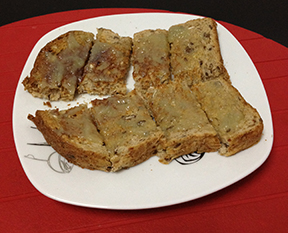
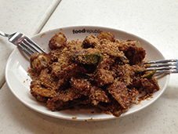
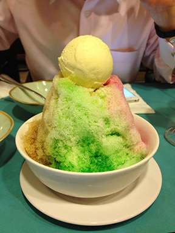

{kind=link}
Singaporean Food
Singaporean food is my favorite cuisine. Singapore, located more than 9,000 miles from Short Hills, has some of the best food around. From breakfast to lunch to dinner, there is never anything short of flavor and substance. The hawker centers that sell meals for as little as a couple of dollars are great places to go for a quick bite or to chat with friends, while enjoying some scrumptious comestibles. Here is an introduction to some Singaporean dishes that you may or may not know about.
- Kaya Toast
- Rojak
- Ice Kachang
Kaya Toast
Kaya toast is a popular breakfast food. Kaya is a spread made out of eggs and coconut, and it is served on toast. This breakfast is cheap and fast and you can find it in any cafe in Singapore.
Some people prefer their kaya toast to include butter. Kaya toast can also be prepared using especially thick toast slices, or normal pieces of toast. You can try and buy kaya here to make kaya toast yourself. Or you can find a recipe to make your own kaya at home.
Rojak
Rojak is a dish best served cold. The ingredients include pineapple, jicama, cucumber, you tiao, and calimansi zest, all tossed together in a shrimp paste with peanuts sprinkled on top. It is a great dish for sharing.
Click on the picture above to learn more about rojak.
Ice Kachang
Ice Kachang is a popular dessert in Singapore. Underneath a mountain of shaved ice lies goodies including corn, beans, black jelly, and palm seeds. The mountain is colored with flavored syrups and topped with an optional scoop of ice cream.
While the list of ingredients in this dessert may sound strange to you, they actually complement each other well and together with the sweet, flavored ice, provide a cool, refreshing dish.
But enough about Singaporean food already. There are plenty of good places to eat in Short Hills.